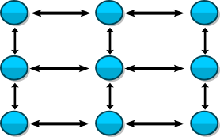
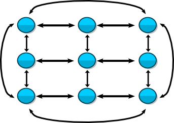
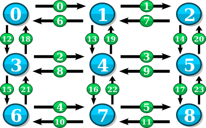

A grid_graph represents a multi-dimensional, rectangular grid of vertices with user-defined dimension lengths and wrapping.
grid_graph models:
Defined in boost/graph/grid_graph.hpp with all functions in the boost namespace. A simple examples of creating and iterating over a grid_graph is available here libs/graph/example/grid_graph_example.cpp. An example of adding properties to a grid_graph is also available libs/graph/example/grid_graph_properties.cpp
template <std::size_t Dimensions, typename VertexIndex = std::size_t, typename EdgeIndex = VertexIndex> class grid_graph;
The constructor to grid_graph has several overloads to aid in configuring each dimension:
// Defines a grid_graph that does not wrap. grid_graph<...>(boost:array<VertexIndex, Dimensions> dimension_lengths); // Defines a grid_graph where all dimensions are either wrapped or unwrapped. grid_graph<...>(boost:array<VertexIndex, Dimensions> dimension_lengths, bool wrap_all_dimensions); // Defines a grid_graph where the wrapping for each dimension is specified individually. grid_graph<...>(boost:array<VertexIndex, Dimensions> dimension_lengths, boost:array<bool, Dimensions> wrap_dimension);
// Define dimension lengths, a 3x3 in this case boost::array<int, 2> lengths = { { 3, 3 } }; // Create a 3x3 two-dimensional, unwrapped grid graph (Figure 1) grid_graph<2> graph(lengths); // Create a 3x3 two-dimensional, wrapped grid graph (Figure 2) grid_graph<2> graph(lengths, true);

Figure 1: A 3x3 two-dimensional, unwrapped grid graph

Figure 2: A 3x3 two-dimensional, wrapped grid graph
The grid_graph supports addressing vertices and edges by index. The following functions allow you to convert between vertices, edges, and their associated indices:
typedef grid_graph<...> Graph; typedef graph_traits<Graph> Traits; // Get the vertex associated with vertex_index Traits::vertex_descriptor vertex(Traits::vertices_size_type vertex_index, const Graph& graph); // Get the index associated with vertex Traits::vertices_size_type get(boost::vertex_index_t, const Graph& graph, Traits::vertex_descriptor vertex); // Get the edge associated with edge_index Traits::edge_descriptor edge_at(Traits::edges_size_type edge_index, const Graph& graph); // Get the index associated with edge Traits::edges_size_type get(boost::edge_index_t, const Graph& graph, Traits::edge_descriptor edge); // Get the out-edge associated with vertex and out_edge_index Traits::edge_descriptor out_edge_at(Traits::vertex_descriptor vertex, Traits::degree_size_type out_edge_index, const Graph& graph); // Get the out-edge associated with vertex and in_edge_index Traits::edge_descriptor in_edge_at(Traits::vertex_descriptor vertex, Traits::degree_size_type in_edge_index, const Graph& graph);
typedef grid_graph<2> Graph; typedef graph_traits<Graph> Traits; // Create a 3x3, unwrapped grid_graph (Figure 3) boost::array<int, 2> lengths = { { 3, 3 } }; Graph graph(lengths); // Do a round-trip test of the vertex index functions for (Traits::vertices_size_type v_index = 0; v_index < num_vertices(graph); ++v_index) { // The two indices should always be equal std::cout << "Index of vertex " << v_index << " is " << get(boost::vertex_index, graph, vertex(v_index, graph)) << std::endl; } // Do a round-trip test of the edge index functions for (Traits::edges_size_type e_index = 0; e_index < num_edges(graph); ++e_index) { // The two indices should always be equal std::cout << "Index of edge " << e_index << " is " << get(boost::edge_index, graph, edge_at(e_index, graph)) << std::endl; }

Figure 3: 3x3 unwrapped grid_graph with vertex and edge indices shown.
There are several grid_graph specific member functions available:
typedef grid_graph<...> Graph; typedef graph_traits<Graph> Traits; // Returns the number of dimensions std::size_t dimensions(); // Returns the length of a dimension Traits::vertices_size_type length(std::size_t dimension); // Returns true if the dimension wraps, false if not bool wrapped(std::size_t dimension); // Returns the "next" vertex in a dimension at a given distance. If the dimension // is unwrapped, next will stop at the last vertex in the dimension. Traits::vertex_descriptor next(Traits::vertex_descriptor vertex, std::size_t dimension, Traits::vertices_size_type distance = 1); // Returns the "previous" vertex in a dimension at a given distance. If the // dimension is unwrapped, previous will stop at the beginning vertex in the dimension. Traits::vertex_descriptor previous(Traits::vertex_descriptor vertex, std::size_t dimension, Traits::vertices_size_type distance = 1);
typedef grid_graph<3> Graph; typedef graph_traits<Graph> Traits; // Define a 3x5x7 grid_graph where the second dimension doesn't wrap boost::array<std::size_t, 3> lengths = { { 3, 5, 7 } }; boost::array<bool, 3> wrapped = { { true, false, true } }; Graph graph(lengths, wrapped); // Print number of dimensions std::cout << graph.dimensions() << std::endl; // prints "3" // Print dimension lengths (same order as in the lengths array) std::cout << graph.length(0) << "x" << graph.length(1) << "x" << graph.length(2) << std::endl; // prints "3x5x7" // Print dimension wrapping (W = wrapped, U = unwrapped) std::cout << graph.wrapped(0) ? "W" : "U" << ", " << graph.wrapped(1) ? "W" : "U" << ", " << graph.wrapped(2) ? "W" : "U" << std::endl; // prints "W, U, W" // Define a simple function to print vertices void print_vertex(Traits::vertex_descriptor vertex_to_print) { std::cout << "(" << vertex_to_print[0] << ", " << vertex_to_print[1] << ", " << vertex_to_print[2] << ")" << std::endl; } // Start with the first vertex in the graph Traits::vertex_descriptor first_vertex = vertex(0, graph); print_vertex(first_vertex); // prints "(0, 0, 0)" // Print the next vertex in dimension 0 print_vertex(graph.next(first_vertex, 0)); // prints "(1, 0, 0)" // Print the next vertex in dimension 1 print_vertex(graph.next(first_vertex, 1)); // prints "(0, 1, 0)" // Print the 5th next vertex in dimension 2 print_vertex(graph.next(first_vertex, 2, 5)); // prints "(0, 0, 5)" // Print the previous vertex in dimension 0 (wraps) print_vertex(graph.previous(first_vertex, 0)); // prints "(2, 0, 0)" // Print the previous vertex in dimension 1 (doesn't wrap, so it's the same) print_vertex(graph.previous(first_vertex, 1)); // prints "(0, 0, 0)" // Print the 20th previous vertex in dimension 2 (wraps around twice) print_vertex(graph.previous(first_vertex, 2, 20)); // prints "(0, 0, 1)"